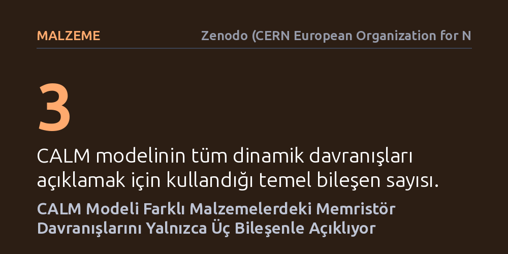

MALZEME · Zenodo (CERN European Organization for Nuclear Research) · 2026-10-21
Araştırmacı, halojenür perovskitler, metal oksitler ve nanofluidik kanallar gibi farklı malzemelerden yapılan memristörlerin sergilediği ortak dinamik özellikleri tek bir matematiksel çerçevede toplamayı hedefledi. CALM adı verilen yalın modelin, yalnızca üç temel bileşenle bu karmaşık elektriksel davranışların tamamını açıklayabildiği gösterildi.
Farklı fiziksel yapıdaki bellek elemanlarının karmaşık görünen davranışlarının ortak ve son derece yalın kurallarla öngörülebileceğini gösterir.

Geleneksel elektronik devrelerde direnç, içinden geçen akıma sabit bir karşılık verir. Ancak memristör olarak adlandırılan bellekli dirençler, geçmişte üzerlerinden ne kadar elektrik yükü geçtiğini hatırlar. Bu hafıza yeteneği, bilgisayarların hem işlem yapıp hem de veriyi aynı noktada saklayabilmesini hedefleyen yeni nesil donanımlar için büyük ilgi görmektedir. Ne var ki halojenür perovskitler, metal oksitler ve sıvı kanallı nanofluidik düzenekler gibi birbirine hiç benzemeyen malzemelerle üretilen bu aygıtlar, deneylerde son derece karmaşık ve değişken tepkiler vermektedir.
Farklı kimyasal yapılara sahip malzemelerin elektrik alan altındaki tepkileri incelendiğinde; gerilim tarama hızına göre yön değiştiren histerezis eğrileri, negatif sığa değerleri ve darbe dizileri altında iletkenliğin artıp azalması gibi ortak dinamik özellikler gözlenir. Farklı malzeme gruplarının benzer elektriksel desenler üretmesi, bu karmaşık tepkilerin altında evrensel ve yalın bir çalışma ilkesinin yatıp yatmadığı sorusunu doğurur. Eğer her malzeme için ayrı bir karmaşık mekanizma kurmak yerine ortak bir matematiksel çerçeve bulunabilirse, araştırmacılar bu aygıtları çok daha öngörülebilir biçimde tasarlayabilir.
Juan Bisquert tarafından hazırlanan bu çalışma, sıfırdan yeni laboratuvar deneyleri yapmak yerine var olan deneysel gözlemleri kapsayacak kuramsal bir rehber kurgulamayı tercih ediyor. Araştırmacı, iletkenlikle etkinleşen yarı doğrusal memristör (CALM) adını verdiği asgari bir modeli adım adım türeterek konuyu inceliyor. Bu yaklaşımda amaç, karmaşık mikroskobik ayrıntılara boğulmadan aygıtın dışarıdan ölçülebilen akım ve gerilim ilişkisini en az sayıda değişkenle yeniden üretebilmektir.
Yazar, geliştirdiği kuramsal modeli yalnızca soyut denklemler düzeyinde bırakmayıp Python tabanlı referans kodları ve adım adım çözülebilen alıştırmalarla destekliyor. Farklı gerilim tarama hızları ve darbe dizileri bilgisayar ortamında simüle edilerek modelin gerçek laboratuvar ölçümlerinde görülen histerezis döngülerini ve empedans spektrumlarını ne derece doğru yakaladığı test ediliyor. Böylece araştırmacılar, modelin denklemlerini kendi verilerine uygulayabilecekleri somut bir hesaplama aracı elde ediyor.
Çalışmanın ana bulgusu, son derece farklı fiziksel sistemlerde görülen tüm bu karmaşık tepkilerin yalnızca üç temel bileşen kullanılarak modellenebilmesidir. Bu bileşenler; aygıtın erişebileceği iki sınır iletkenlik durumu, gerilime bağlı doğrultma işlevi ve sistemin durum değiştirmesi için gereken karakteristik süredir. Model, gerilim uygulandığında iç iletkenlik durumunun bu iki sınır arasında nasıl kaydığını ve sistemin gevşeme süresinin uygulanan gerilimle nasıl değiştiğini açıklar.
Araştırma, bu üç değişkenin bir araya gelmesiyle empedans ölçümlerinde ortaya çıkan endüktif döngülerin, negatif sığa etkisinin ve sinir hücrelerindekine benzer iletkenlik güçlenmesi ile zayıflamasının doğrudan türetilebildiğini ortaya koyuyor. Malzemenin kimyasal bileşimi ne olursa olsun, iç durumun değişme hızı ile dış gerilim tarama hızı arasındaki yarış, gözlenen histerezis döngülerinin yönünü ve biçimini belirlemektedir.
Bu bulgular, memristör fiziğinde uzun süredir yaşanan kavramsal karmaşayı sadeleştirme potansiyeline sahiptir. Araştırmacılar çoğu zaman deneysel eğrilerde gördükleri her sıra dışı sapma için yeni ve karmaşık bir fiziksel süreç tanımlamaya çalışmaktaydı. CALM modeli, gözlenen birçok karmaşık dinamiğin aslında son derece sade ve doğrusal olmayan temel bir gecikme mekanizmasının doğal matematiksel sonucu olduğunu gösteriyor.
Bununla birlikte, modelin başarısı mikroskobik malzeme fiziğinin tamamen göz ardı edilebileceği anlamına gelmez. Model bize sistemin giriş-çıkış davranışını yalın bir dille özetleme olanağı sunarken, iyon göçü veya arayüz kusurları gibi atomik süreçlerin bu üç parametreyi nasıl belirlediğini anlamak için malzeme odaklı çalışmaların sürmesi gerekmektedir. İnsan beynini taklit eden yapay zeka çiplerinin tasarımında bu tür yalın modeller, devre benzetimlerini hızlandırarak mühendislik sürecini kolaylaştırabilir.